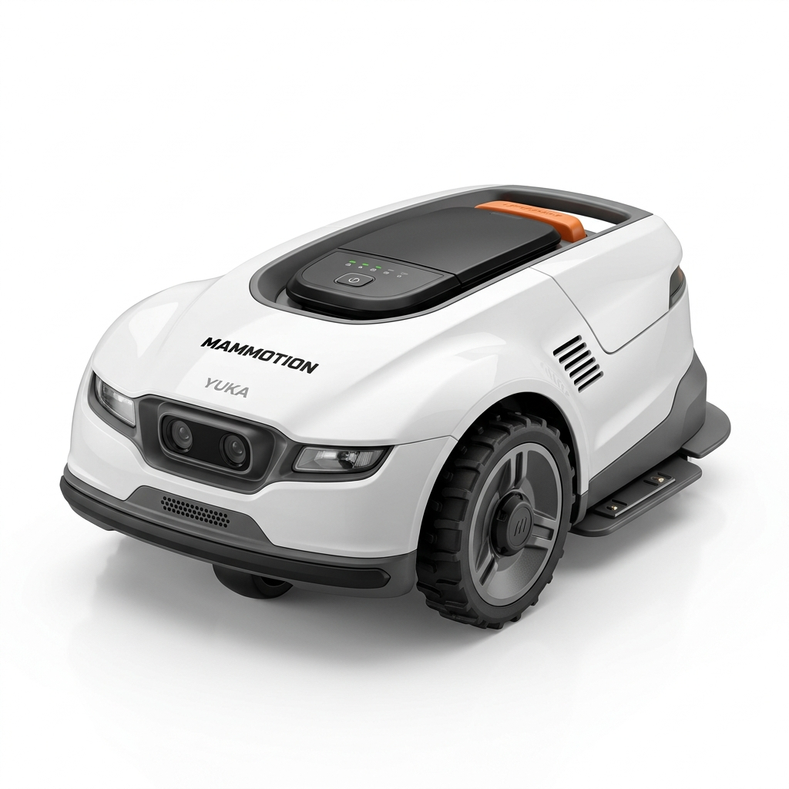
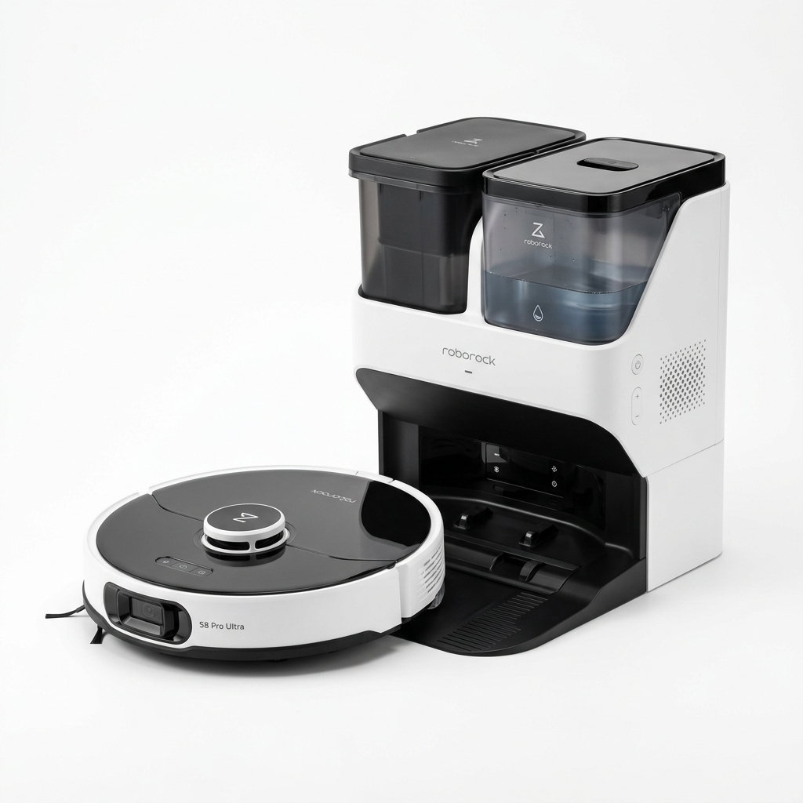

Machine Krups Genio S Plus. Un café de pro à la maison !
Numéro 2

Mammotion YUKA Mini 2. Le robot tondeuse 100% sans fil 🌳
Numéro 3

Roborock S8 Pro Ultra. Laisse-le faire le ménage tout seul 🧹
Promos du jour :
Lien sur mon site ! 👉 maison-connectée.fr
🔴 Enregistreur Automatique
Coupe la fenêtre Chrome pour l'ajuster !
Quand tu seras prêt, clique ci-dessous. Une petite page va s'ouvrir : Sélectionne l'onglet Chrome actuel, et surtout n'oublie pas de cocher "Partager l'audio de l'onglet" en bas à gauche de la fenêtre d'autorisation.